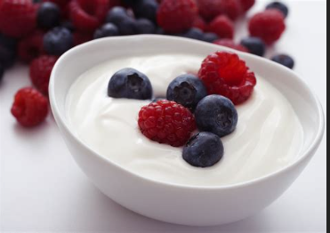

Yog

Description
This yogurt is cashew-based with
no added flavor. I put berries in it or sliced fruit
suchs as pears. I also add nuts, grains, etc.
Ingredients
- Cashew Yogurt
- Berries or other Fruit
- Nuts, Grains, etc.
Steps
- Pour yogurt into bowl
- Mix in berries, fruit, nuts, grains, etc.
- Enjoy!